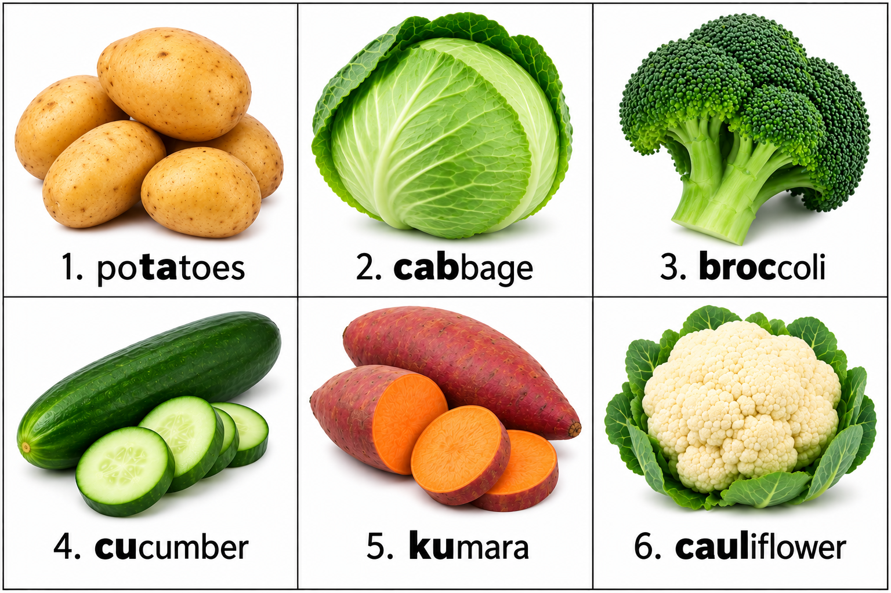
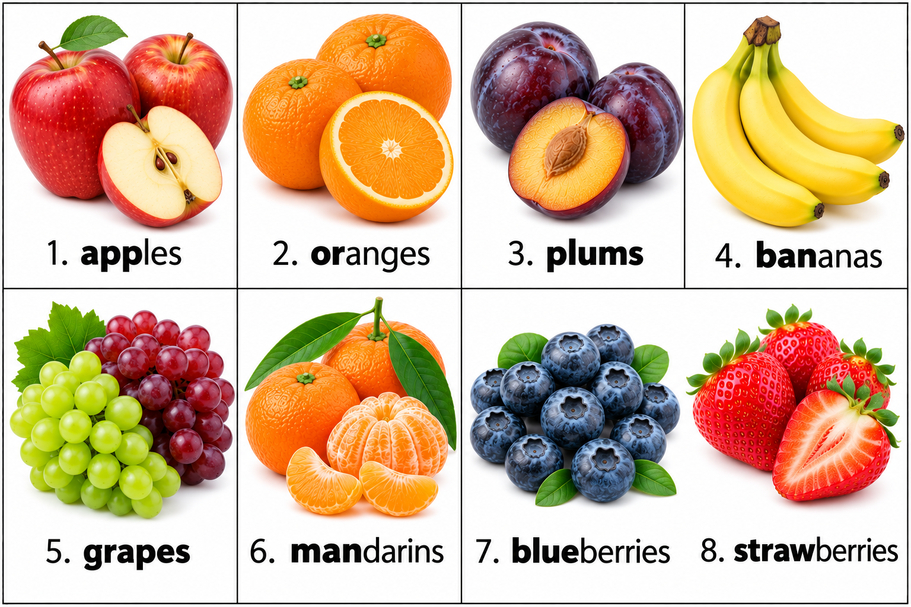

Reading 1
There are many kinds of vegetables. Potatoes, carrots and cabbage are common
vegetables. I like to eat them with meat or rice.
Audio: Reading 1
These are common vegetables and fruit you will see in your supermarket.
Listen to the audio and say each word. Please do it more than once.

Read each short story. Then play the audio and listen to the pronunciation. Say it with the person speaking.
Listen to the audio and say each word. Please do it more than once.

Read each short story. Then play the audio and listen to the pronunciation. Say it with the person speaking.
This is Ali’s house. It is grey. The front door is black. The roof is black too.
Ali’s house has a garage. It also has a lot of windows. Ali has a flower box in the front window. There are red flowers in the flower box.
Ali’s front yard has a deck. There are two chairs and a table on the deck. There is also a white fence around the front yard.
In Ali’s backyard, there is a swing set and a garden. There is a white fence around the backyard too.